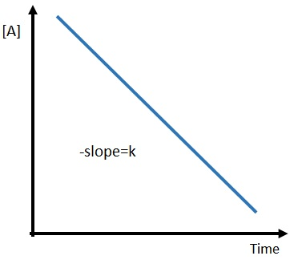

Press Ctrl-Z to toggle the answers.
Retake Exam 2 (Ch 14-15)
Mr. Alder
May 1, 2023
name: ______________________________________
1) (SLO 2.4) What rate is termolecular?
A) Rate = K[A][B]2*
B) Rate = K[A]
C) Rate = K[A]2
D) Rate = K
2) (SLO 2.5) For a reaction that follows the general rate law, Rate = K[A]2[B]2, what will happen to the rate of reaction if the concentration of A is increased by a factor of 5?
A) The rate will decrease by a factor of 1/20.
B) The rate will increase by a factor of 25*
C) The rate will increase by a factor of 20.
D) The rate will decrease by a factor of 1/25
3) (SLO 2.1) If the rate of
disappearance of HBr in the gas phase reaction is 0.0588 M/s, then the rate of
appearance of Br
2 is _______ M/s
2 HBr (g) ➞ H2 (g) + Br2 (g)
A) 0.118 M/s
B) 0.0294 M/s*
C) 0.0588 M/s
D) 17.0 M/s
4) (SLO 2.2) Given the following balanced equation, determine the rate of reaction with respect to [H2].
N2 (g) + 3 H2 (g) ➞ 2 NH3 (g)
A) Rate = \( -\frac{1}{3} \frac{Δ[H_2]}{Δt} \)*
B) Rate = \( +\frac{3}{1} \frac{Δ[H_2]}{Δt} \)
C) Rate = \( -\frac{3}{2} \frac{Δ[H_2]}{Δt} \)
D) Rate = \( -\frac{2}{3} \frac{Δ[H_2]}{Δt} \)
5) (SLO 2.3) What is the overall order of the following reaction, given the rate law?
X + 4 Y ➞ 4 Z Rate = k[X][Y]
A) 4
B) 1
C) 2*
D) 5
6) (SLO 2.6) At 393 K a reaction is found to have a rate constant of 33600 M-1s-1, at 264 K the reaction is found to have a rate constant of 8.82 M-1s-1. What is the activation energy for this reaction.
A) 55.1 kJ/mol*
B) -55.1 kJ/mol
C) -23.9 kJ/mol
D) 23.9 kJ/mol
7) (SLO 2.7) Which of the following reactions would you predict to have the largest orientation factor?
A) Br2 (g) + H2C-CH2 (g) ➞ H2BrC-CBrH2 (g)
B) NOCl (g) + NOCl (g) ➞ 2 NO (g) + Cl2 (g)
C) H (g) + F (g) ➞ HF (g)*
D) NH3 (g) + BCl3 (g) ➞ H3N-BCl3 (g)
8) The reaction A + B ➞ C + D, has a rate constant of 1.08 × 10-5 Ms-1 at 0°C, what is the overall order of the reaction?
A) 0*
B) 1
C) 2
D) 3
9) What is the order of the reaction represented by the graph below?

A) second
B) third
C) zeroth*
D) first
10) Given the initial rate data below, what is the rate law for the following reaction?
A (g) + B (g)
➞ C (g)
| Trial |
[A] |
[B] |
rate (M/s) |
| 1 |
1.0 |
1.0 |
5.71x10-8 |
| 2 |
1.0 |
2.0 |
2.28x10-7 |
| 3 |
2.0 |
1.0 |
5.71x10-8 |
A) rate = K[A][B]
B) rate = K[B]4
C) rate = K[A]2
D) rate = K[B]2*
11) Given the following proposed mechanism, what is the rate law for the reaction?
A
2 + B
➞ A2B (overall reaction)
| step 1 |
A2 ➞ 2A |
fast |
| step 2 |
2A + B ➞ A2B |
slow |
A) Rate = \( K[A_2][B] \)*
B) Rate = \( K[A_2]^{1/2}[B] \)
C) Rate = \( K[A_2]^2[B] \)
D) Rate = \( \frac{K[A_2]^2[B]}{2} \)
12) What generally happens with a reaction when the temperature is increased?
A) The rate constant (K) increases, causing the rate of the reaction to decrease
B) The rate constant (K) decreases, causing the rate of the reaction to increase
C) The rate constant (K) increases, causing the rate of the reaction to increase*
D) The rate constant (K) decreases, causing the rate of the reaction to decrease.
13) Using the balanced chemical equation below, calculate the rate of rate reaction with a rate in change of concentration of P
2O
5 equal to 15.2 M/s.
4 P + 5 O2 ➞ 2 P2O5
A) 7.60 M/s*
B) 231 M/s
C) 15.2 M/s
D) 30.4 M/s
14) A reaction is found to have an activation energy of 56.1 kJ/mol, and a frequency factor (A) of 3.29x1010 s-1. What is the rate constant of the reaction at 269 K?
A) 0.421*
B) 2.57x1021
C) 0.337
D) 3.21x1010
15) (SLO 3.2) The equilibrium constant is given for one of the reactions below. Determine the value of the missing equilibrium constant (Kc2).
N2O4 (g) ⇌ 2 NO2 Kc1 = 1.92
2 N2O4 (g) ⇌ 4 NO2 Kc2 = ?
A) 3.78
B) 3.84
C) 3.69*
D) 13.6
16) (SLO 3.7) Consider the following reaction.
Xe (g) + 2 F2 (g) ⇌ XeF4 (g)
A reaction mixture contains 5.38 atm of Xe, 7.89 atm F2. Once the reaction reaches equilibrium, the pressure of Xe is 4.27 atm. What is the equilibrium constant (Kp) for the reaction?
A) 124
B) 0.0458
C) 0.00566
D) 0.00809*
17) (SLO 3.4) The following reaction is exothermic. Which change will shift the equilibrium to the left?
2 NH3 (g) ⇌ N2 (g) + 3 H2 (g)
A) Raising the temperature*
B) Lowering the temperature
C) Adding a solid
D) All of the above.
E) None of the above.
18) (SLO 3.1) What is the equilibrium constant equation for the following reaction?
2 N2 (g) + 6 H2 (g) ⇌ 4 NH3 (g)
A) K = \( \frac{[N_2][H_2]}{[NH_3]} \)
B) K = \( \frac{[N_2]^2[H_2]^6}{[NH_3]^4} \)
C) K = \( \frac{[NH_3]^4}{[N_2]^2[H_2]^6} \)*
D) K = \( \frac{[NH_3]}{[N_2][H_2]} \)
19) (SLO 3.3) The Kp for the reaction below is 4.55 x 10-7 at 260°C.
2 NO (g) + Cl2 (g) ⇌ 2 NOCl (g)
In an equilibrium mixture of the three gases, PNO = PCl2 = 6.14 x 10-3 atm. The partial pressure of the product, nitrosyl chloride (NOCl2), is __________ atm.
A) 3.25x10-7 atm*
B) 3.25 atm
C) 4.14x10-6 atm
D) 1.05x10-13 atm
20) (SLO 3.5) Identify the change that will always shift the equilibrium to the left.
A) Increasing pressure
B) Removing product
C) Decreasing pressure
D) Removing reactant*
21) (SLO 3.6) In a reaction mixture containing only reactants, what is the value of Qc?
A) ꝏ (infinity)
B) -1
C) 1
D) 0*
22) Once this reaction has reached equilibrium, which of the following changes would shift the equilibrium to the right?
2 SO2 (g) + O2 (g) ⇌ 2 SO3 (g), ΔH = -197.7 kJ
A) An increase in pressure*
B) An increase in temperature
C) An increase in volume
D) Removing reactant
23) If Keq = 6.87x1011 at 288 K, then what is ΔG° at 288 K?
A) -28.3 kJ
B) -6.25x104 kJ
C) -0.227 kJ
D) -65.3 kJ*
24) Consider the reaction at 252 K:
2 NO (g) + O2 (g) ⇌ 2 NO2 (g) ΔG°= -71.9 kJ
Calculate ΔGrxn under these conditions:
PNO = 0.200 atm; PO2 = 0.200 atm; PNO2 = 1.00 atm
A) 10.1 kJ
B) -67.5 kJ
C) 1.00x104 kJ
D) -61.8 kJ*
25) Consider the reaction at 260. K:
2 NO (g) + O2 (g) ⇌ 2 NO2 (g) ΔG°= -76.0 kJ
Calculate ΔGrxn under these conditions:
PNO = 0.200 atm; PO2 = 0.200 atm; PNO2 = 2.00 atm
A) -62.6 kJ*
B) 13.4 kJ
C) 1.34x104 kJ
D) -70.2 kJ
26) Once this reaction has reached equilibrium, which of the following changes would shift the equilibrium to the left?
2 SO2 (g) + O2 (g) ⇌ 2 SO3 (g), ΔH = -197.7 kJ
A) Adding SO3*
B) Removing SO3
C) A decrease in temperature
D) An increase in pressure
27) Is the following reaction reactant or product favored?
HBr (s) + H2O (l) ⇌ H3O+ (aq) + Br- (aq) Kc = 1.0x109
A) Reactant favored
B) Product favored*
C) All of the above.
D) None of the above.
28) For the following reaction, if a container holds 2.66 M I2 and 2.36 M Br2. After a reaction takes place, what would be the equilibrium concentration of IBr?
I2 (g) + Br2 (g) ⇌ 2 IBr (g) Kc = 6.88
A) 2.84 M*
B) 2.29 M
C) 1.38 M
D) 3.52 M